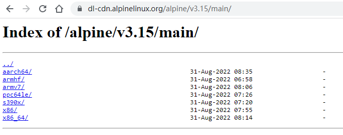

1. 现代化的工程系统
alpine linux的全部开发都在
https://gitlab.alpinelinux.org/alpine
mirror: https://git.alpinelinux.org/
- 自己搭建的gitlab服务器, 允许外部用户注册, fork库, 并提交MR
- 使用gitlab-ci的CI/CD做build test
- 用gitlab issue来跟踪bug
- 文档也是repo管理, 使用Antora Playbook发布, 网页入口是 https://alpinelinux.org/
2. 使用subgroup来组织repo
比如CI/CD工具库在alpine/infra/docker/alpine-gitlab-ci下面, 先是根alpine, 再是infra, 再是docker, 最后是repo
3. 组织清爽, 源代码干净
比如alpine-gitlab-ci/-/blob/master/overlay/usr/local/bin/build.sh里面的shell 输出代码:
: "${CI_ALPINE_BUILD_OFFSET:=0}"
: "${CI_ALPINE_BUILD_LIMIT:=9999}"
msg() {
local color=${2:-green}
case "$color" in
red) color="31";;
green) color="32";;
yellow) color="33";;
blue) color="34";;
*) color="32";;
esac
printf "\033[1;%sm>>>\033[1;0m %s\n" "$color" "$1" | xargs >&2
}
verbose() {
echo "> " "$@"
# shellcheck disable=SC2068
$@
}
debugging() {
[ -n "$CI_DEBUG_BUILD" ]
}
debug() {
if debugging; then
verbose "$@"
fi
}
die() {
msg "$1" red
exit 1
}
capture_stderr() {
"$@" 2>&1
}
report() {
report=$1
reportsdir=$APORTSDIR/logs/
mkdir -p "$reportsdir"
tee -a "$reportsdir/$report.log"
}
4. aports
alpine支持的package都放在aports这个库下面.
- main: alpine core team直接支持的package
- community: 由社区支持的package
参考: https://wiki.alpinelinux.org/wiki/Repositories
/etc/apk/repositories是package的配置
/ # cat /etc/apk/repositories
https://dl-cdn.alpinelinux.org/alpine/v3.15/main
https://dl-cdn.alpinelinux.org/alpine/v3.15/community
比如https://dl-cdn.alpinelinux.org/alpine/v3.15/main目录下包括了所有arch的预编译好的apk

点进去看这些apk的修改时间是不一样的, 说明apk是按需编译的.
4.1. 交叉编译
似乎可以用bootstrap.sh来生成交叉编译的工具链
参考: musl-cross-make
5. openrc
alpine使用openrc
https://wiki.alpinelinux.org/wiki/OpenRC
6. musl libc
alpine使用musl libc, 我看好musl的轻量简洁.
几种libc的比较